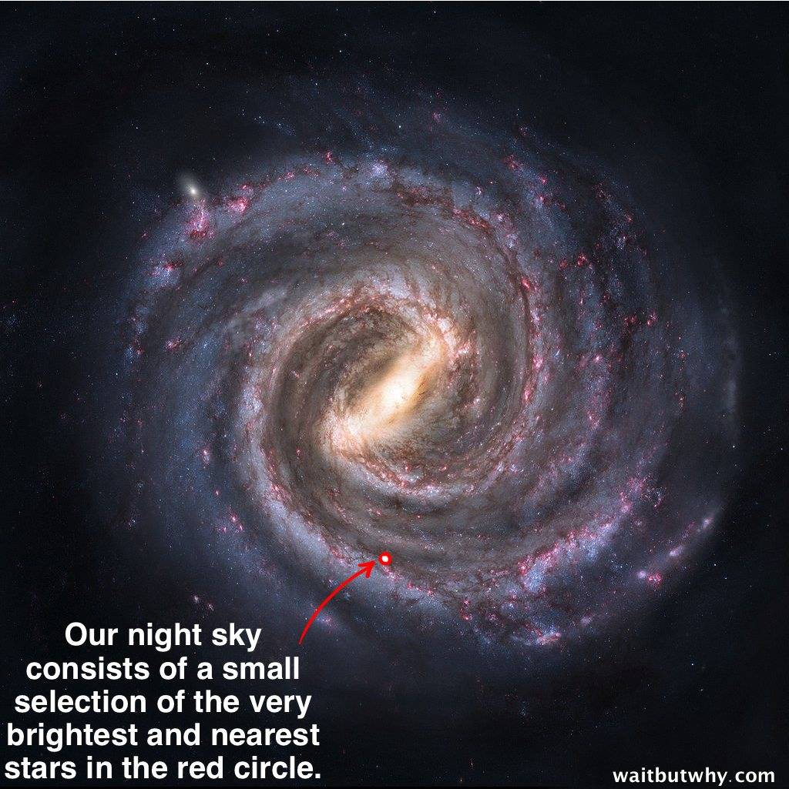

Aggañña Sutta is one of the few suttās in which the Buddha addressed the origin of the "external world." Its account vastly differs from the current scientific theory that the universe came into existence only 15 billion years ago in the "Big Bang."
October 19, 2024; November 4, 2024 (revised #9)
Introduction
1. In a previous post, “Buddhism and Evolution – Aggañña Sutta (DN 27),” I discussed the salient aspects of Buddha's explanation of our physical universe. That post raises many questions in the minds of those who read it for the first time because Buddha's answer is drastically different from the picture proposed by modern science. Here, I will provide some necessary background.
- Modern science's current theory is that the universe started with a "Big Bang" out of nothing about 15 billion years ago, i.e., the universe did not exist before that.
- In contrast, the Buddha taught that each of us is going through a rebirth process with "no discernible beginning," i.e., the universe has existed forever!
- Those are two very different "worldviews."
2. In the "Aggañña Sutta" (DN 27), the Buddha explained that the universe is not static, i.e., it does not remain the same over time. He taught that Earth—with its Sun and other planets (called a cakkavāla)—is one of the uncountable such systems in the universe.
- A cluster of 10,000 such cakkavāla constitutes a "loka dhātu," and there could be an uncountable number of them in the universe.
- Such a "loka dhātu" undergoes a cyclic process of destruction and re-formation over billions of years, i.e., it is destroyed and then re-formed over many billions of years. However, only a few are in the "destruction phase" at a given time.
- Every year, scientists observe a few such destructions with their telescopes. There must also be a few "re-formations," but scientists cannot observe them. All scientific observations of the universe are based on detecting light emitted by the stars. For example, the destruction of a "loka dhātu" is due to the "blowing-up" of a star in that cluster, and scientists can easily observe that intense light from such a supernova explosion.
- However, there is no available mechanism for scientists to directly observe the re-formation of a cakkavāla, which happens over billions of years (as pointed out in “Buddhism and Evolution – Aggañña Sutta (DN 27).”)
3. Even though the "dense matter" (including the human realm) in all of those 10,000 cakkavāla disappear (destroyed), the living beings in them survive in higher-lying realms that are not destroyed. Thus, "destruction" means only the destruction of the "realms of living beings with dense bodies," and living beings there would have moved up to higher "less-dense realms" (at or above the Ābhassara Brahma realm) well before the destruction takes place.
- All cakkavāla in a loka dhātu remain in that state for billions of years. Toward the latter half of that phase, all those Brahmās start "missing the close companionship" they enjoyed in the human realm. Brahmās, by their nature, live secluded lives (like those ancient yogis who practiced anariya jhāna to be reborn in Brahma realms.) Their desire to go back to such a way of living creates suddhāṭṭhaka (the fundamental particle in Buddha Dhamma; see below) in abundance; the accumulation of them over billions of years lead to the re-formation of the Sun, Earth, and other planets (cakkavāla.) It happens to all cakkavāla in that loka dhātu.
- When each cakkavāla is re-formed, those lower-lying realms are re-populated over billions of years. See the introduction in “Buddhism and Evolution – Aggañña Sutta (DN 27)” for details.
- A critical point is that only a tiny fraction of the universe is destroyed periodically, not the whole universe.
Scientific Theories about the Universe Have Evolved
4. Even a few hundred years ago, scientists (or, more accurately, philosophers and religions, because no actual science existed before Galileo's generation) believed our Earth was at the center of the universe: “Geocentric model.” They thought "Gods" resided in the "heavenly sphere" with the stars above the Earth.
- Only after Galileo invented the telescope (in the late 1500s) did actual science emerge, and it was realized that the Earth (and other planets) orbited around the Sun. Even as recently as at the beginning of the 1900s, Lord Kelvin (one of the top scientists of the day) estimated that the age of the Sun was less than 40 million years. Our knowledge of the universe was also pretty much limited to the Solar system. So, this meant the age of our “known universe” was very short.
- Thus, the Buddha’s teachings on a universe filled with an uncountable number of cakkavāla going through a cyclic "destruction/re-formation" process lasting billions of years seemed preposterous even in 1900!
- Vindication of the Buddha’s teachings started in the 1900s with the advent of quantum mechanics and relativity. Becquerel's Discovery of radioactivity in 1898 and Einstein’s explanation of the photoelectric effect in 1905 led to the quantum theory of atomic structure. That, in turn, led to the correct picture of nuclear fusion as the source of solar energy.
- By 1956, the solar system’s age was more than 4 billion years, and the universe’s age was estimated to be around 14 billion years. Yet, even billions of years are hardly the same as “beginning-less time”!
5. Then, scientists (with the invention of better telescopes) discovered that our Solar system was just one of billions of such "star systems" in the Milky Way galaxy and that there were other such galaxies in the universe.
- By 1929, Edwin Hubble proved that distant galaxies were moving away from each other and that our galaxy was but one of many galaxies. That was a vast understatement since now we know that there are well over 100 billion galaxies in our observable universe!
- The existence of "exoplanets" (planets outside our Solar system) was observed only in 1991! Since then, scientists have discovered over 5000 exoplanets.
https://youtu.be/OOwI3nTAHIc?si=rbgGv5uKUsBV30p0
- So, the "scientific view" of the universe is much closer to the Buddha's worldview now regarding its vastness (the uncountable number of stars) and the basic structure of planets around each star (cakkavāla). Therefore, it is clear that, at least in that respect, science has gradually proved the validity of Buddha's explanations about the universe.
- The remaining significant difference is regarding the universe's age, as discussed in #1 above. Scientists say the universe was "born out of nothing" about 15 billion years ago. The Buddha taught that only tiny sections (loka dhātu with 10,000 cakkavāla) go through a cyclic "destruction/re-formation" process over many billions of years and that there is no traceable beginning to that process.
The Immensity of the Universe
6. At this point, it is worthwhile to pause and consider how incredible it is that a single human could "see" the universe's structure using only his mind 2600 years ago. It took modern science 400 years to reach this level of understanding, culminating in the effort of many generations of scientists.
- The following is a high-resolution image of our Milky Way galaxy. We can see only a couple of thousand stars with our naked eyes, as indicated by the "red dot" in the image. But there are hundreds of BILLIONS of stars in our galaxy. Furthermore, there are about an equal number of GALAXIES in our universe. Thus, there is a whole galaxy for each star in our galaxy. It is truly mind-boggling.

- Yet, even a few hundred years ago, it was believed our Earth was at the center of the universe; see #4 above.
- Therefore, Buddha’s view of the universe as consisting of innumerable “world systems” was not looked at favorably even a few hundred years ago. Of course, that has changed now.
Our "Mundane Knowledge Base"
7. Humans have developed many "theories" or "views" about the world. Those who focus on this issue fall into two categories: scientists and philosophers.
- Both scientists and philosophers come to conclusions based on their observations of the external world, i.e., their sensory experiences.
- However, our sensory experiences are limited. In particular, we can "see" the world only through a narrow wavelength range, and even then, we can see only a limited distance.
- As we discussed above, Galileo's discovery of the telescope enhanced that capability, i.e., our sensory experience. Subsequently, scientists have improved their ability to see through vast distances in space.
- The image in #6 above provides a good visualization of this capability. Even though all our telescopes are within the "red dot," we can deduce details of the structures of galaxies even outside our galaxy!
Limitations of Scientific Techniques
8. However, we should not be fooled into thinking that those measurements provide the "whole picture."
- As I mentioned above in #2, all those measurements are based on light emitted by stars!
- We (I mean the scientists) can only indirectly infer things about planets around other stars. For example, they deduce the number of plants around a star by monitoring the shadow cast on that star's light by the movements of those planets. Incredibly, they have enough precision in their measurements to accomplish that.
- However, scientists are genuinely blind to whether life exists on those planets! Biological activities do not generate light.
How Far Away Is the Closest Star?
9. Some say we should be able to detect emissions (light or radio signals) from highly advanced living beings on some of those faraway planets. Would that be possible?
- The closest star (cakkavāla) in our loka dhātu is about four light years away (and thousands of such stars are within the "red dot" in the image above!
- That means a rocket ship traveling at the speed of light will take four years to reach the closest star. For comparison, the distance from the Earth to our Moon would take only 1.25 SECONDS. Therefore, a rocket ship traveling at the speed of light will take only 1.25 SECONDS to arrive at the Moon! But our rocketships take about three days to get to the Moon. Therefore, a modern rocketship would take about 800 thousand years (depending on the speed attained in interstellar space) to reach the NEAREST star. See "Pāṭihāriya (Supernormal Abilities) of a Buddha – Part I."
- The following video shows how far away the closest star is to us.
https://youtu.be/vcJHHU9upyE?si=zDYJjFKMHAt9ndQC
- No matter how intense a light beam (like a laser), it will fade away at distances of the order of light years. Scientists can monitor only light from stars at such distances, and no artificial light source can match a star.
The Universe Is Unfathomably Enormous and Complex
10. Even the "range of a Buddha" is limited to a loka dhātu with 10,000 cakkavāla.
- Since the Milky Way galaxy has roughly 100 billion stars, it contains 100 million loka dhātu!
- This is why the Buddha admonished us not to probe the details of the universe. It is an impossible task, and it will consume the precious time that could be used to end suffering!
- While we should be thankful to all those scientists who made all this "mundane knowledge" possible (because it confirmed Buddha's teachings in one aspect), they wasted their time pursuing that "mundane knowledge"!
11. From the Acinteyya Sutta (AN 4.77):
“There are four things that are not to be conjectured about, which could make one go mad (become a mental patient). Which four?
(i). “Buddha’s knowledge is unconjecturable and not to be conjectured about.
(ii). The details of jhāna (including kinds of supernormal powers that one can attain).
(iii). The precise workings of the results of kamma, i.e., kamma vipāka.
(iv). Origins/details about the external world, i.e., the universe."
- These are the four incomprehensible things that are not to be conjectured about, that would bring madness and confusion to anyone who tries to find everything about them.
Basic Knowledge Necessary to "End the Suffering"
12. However, getting SOME IDEA about the broader world of 31 realms is good. No single sutta or a chapter on Abhidhamma is focused on that.
- I have collected bits and pieces of information in many places in the Tipiṭaka and tried to form a crude picture. We will never be able to go into fine details. Even if the Buddha wanted to, he would not have been able to provide such a vast amount of information. People kept asking him questions about the universe, and in most cases, he refused. Agganna Sutta is an exception, and even it provides only the baseline critical concepts.
- He said he did not want people distracted from the main goal: to end suffering in the rebirth process.
- I will discuss some critical issues relevant to understanding the fundamental principles of Buddha's teachings in the sutta in the next post, "Aggañña Sutta - Further Details."
13. See "Pure Octad constituents" for a detailed discussion related to this subject (including a draft of this post) in the discussion forum. There are lengthy explanations of some related issues in that discussion.
- We can continue the discussion there. If you have any comments/questions, please post them there.
O Aggañña Sutta é um dos poucos Suttā em que o Buddha abordou a origem do “mundo externo”. Sua descrição difere amplamente da teoria científica atual, segundo a qual o universo surgiu há apenas 15 bilhões de anos, no “Big Bang”.
19 de outubro de 2024; 4 de novembro de 2024 (revisão nº 9)
Introdução
1. Em um ensaio anterior, “Buddhismo e Evolução – Aggañña Sutta (DN 27)”, discuti os aspectos mais importantes da explicação do Buddha sobre nosso universo físico. Esse ensaio levanta muitas questões na mente daqueles que o leem pela primeira vez, pois a resposta do Buddha é drasticamente diferente do quadro proposto pela ciência moderna. Aqui, apresentarei algumas informações básicas necessárias.
- A teoria atual da ciência moderna é que o universo teve início com um “Big Bang” a partir do nada há cerca de 15 bilhões de anos; ou seja, o universo não existia antes disso.
- Em contraste, o Buddha ensinou que cada um de nós está passando por um processo de Renascimento “sem início discernível”, ou seja, o universo existe desde sempre!
- Essas são duas “visões de mundo” muito diferentes.
2. No “Aggañña Sutta” (DN 27), o Buddha explicou que o universo não é estático, ou seja, ele não permanece o mesmo ao longo do tempo. Ele ensinou que a Terra — com seu Sol e outros planetas (chamados de cakkavāla) — é um dos incontáveis sistemas desse tipo no universo.
- Um aglomerado de 10.000 desses cakkavāla constitui um “Loka Dhātu”, e pode haver um número incontável deles no universo.
- Tal “Loka Dhātu” passa por um processo cíclico de destruição e re-formação ao longo de bilhões de anos, ou seja, é destruído e depois re-formado ao longo de muitos bilhões de anos. No entanto, apenas alguns se encontram na “fase de destruição” em um determinado momento.
- Todos os anos, os cientistas observam algumas dessas destruições com seus telescópios. Deve haver também algumas “reformações”, mas os cientistas não conseguem observá-las. Todas as observações científicas do universo se baseiam na detecção da luz emitida pelas estrelas. Por exemplo, a destruição de um “Dhātu” se deve à “explosão” de uma estrela nesse aglomerado, e os cientistas podem observar facilmente essa luz intensa proveniente de tal explosão de supernova.
- No entanto, não há nenhum mecanismo disponível para que os cientistas observem diretamente a re-formação de um cakkavāla, que ocorre ao longo de bilhões de anos (conforme apontado em “Buddhismo e Evolução – Aggañña Sutta (DN 27)”).
3. Mesmo que a “matéria densa” (incluindo o reino humano) em todos esses 10.000 cakkavāla desapareça (seja destruída), os seres vivos neles sobrevivem em reinos mais elevados que não são destruídos. Assim, “destruição” significa apenas a destruição dos “reinos dos seres vivos com corpos densos”, e os seres vivos ali teriam se deslocado para “reinos menos densos” mais elevados (no reino de Ābhassara Brahmā ou acima dele) bem antes de a destruição ocorrer.
- Todos os cakkavāla em um Dhātu permanecem nesse estado por bilhões de anos. Perto da segunda metade dessa fase, todos esses Brahmās começam a “sentir falta da companhia íntima” de que desfrutavam no reino humano. Os Brahmās, por natureza, levam vidas reclusas (como aqueles iogues antigos que praticavam Anariya Jhāna para renascer nos reinos de Brahmā). Seu desejo de retornar a esse modo de vida gera Suddhāṭṭhaka (a partícula fundamental no Buddha Dhamma; veja abaixo) em abundância; o acúmulo desses ao longo de bilhões de anos leva à reformação do Sol, da Terra e de outros planetas (cakkavāla). Isso ocorre com todos os cakkavāla naquele Dhātu.
- Quando cada cakkavāla é reformado, esses reinos inferiores são repovoados ao longo de bilhões de anos. Consulte a introdução em “Buddhismo e Evolução – Aggañña Sutta (DN 27)” para obter detalhes.
- Um ponto crucial é que apenas uma minúscula fração do universo é destruída periodicamente, e não o universo inteiro.
As teorias científicas sobre o universo evoluíram
4. Ainda há algumas centenas de anos, os cientistas (ou, mais precisamente, filósofos e religiões, pois não existia ciência propriamente dita antes da geração de Galileu) acreditavam que nossa Terra estava no centro do universo: o “modelo geocêntrico”. Eles pensavam que os “deuses” residiam na “esfera celeste”, junto com as estrelas acima da Terra.
- Somente depois que Galileu inventou o telescópio (no final do século XVI) é que a ciência propriamente dita surgiu, e percebeu-se que a Terra (e outros planetas) orbitavam em torno do Sol. Mesmo em uma época tão recente quanto o início do século XX, Lord Kelvin (um dos principais cientistas da época) estimava que a idade do Sol fosse inferior a 40 milhões de anos. Nosso conhecimento do universo também se limitava praticamente ao Sistema Solar. Portanto, isso significava que a idade do nosso “universo conhecido” era muito curta.
- Assim, os ensinamentos do Buddha sobre um universo repleto de um número incontável de cakkavālas passando por um processo cíclico de “destruição/reforma” que durava bilhões de anos pareciam absurdos mesmo em 1900!
- A confirmação dos ensinamentos do Buddha começou na década de 1900, com o advento da mecânica quântica e da relatividade. A descoberta da radioatividade por Becquerel em 1898 e a explicação de Einstein sobre o efeito fotoelétrico em 1905 levaram à teoria quântica da estrutura atômica. Isso, por sua vez, levou à compreensão correta da fusão nuclear como fonte de energia solar.
- Em 1956, a idade do sistema solar era de mais de 4 bilhões de anos, e a idade do universo era estimada em cerca de 14 bilhões de anos. No entanto, mesmo bilhões de anos dificilmente equivalem a um “tempo sem início”!
5. Então, os cientistas (com a invenção de telescópios mais avançados) descobriram que nosso Sistema Solar era apenas um entre bilhões de tais “sistemas estelares” na Via Láctea e que havia outras galáxias semelhantes no universo.
- Em 1929, Edwin Hubble provou que galáxias distantes estavam se afastando umas das outras e que nossa galáxia era apenas uma entre muitas outras. Isso foi um eufemismo enorme, já que hoje sabemos que existem bem mais de 100 bilhões de galáxias em nosso universo observável!
- A existência de “exoplanetas” (planetas fora do nosso Sistema Solar) só foi observada em 1991! Desde então, os cientistas descobriram mais de 5.000 exoplanetas.
https://youtu.be/OOwI3nTAHIc?si=rbgGv5uKUsBV30p0
- Portanto, a “visão científica” do universo está agora muito mais próxima da visão de mundo do Buddha no que diz respeito à sua imensidão (o número incontável de estrelas) e à estrutura básica dos planetas em torno de cada estrela (cakkavāla). Portanto, fica claro que, pelo menos nesse aspecto, a ciência tem comprovado gradualmente a validade das explicações do Buddha sobre o universo.
- A única diferença significativa que permanece diz respeito à idade do universo, conforme discutido no ponto 1 acima. Os cientistas afirmam que o universo “nasceu do nada” há cerca de 15 bilhões de anos. O Buddha ensinou que apenas pequenas seções (Loka Dhātu com 10.000 cakkavāla) passam por um processo cíclico de “destruição/reforma” ao longo de muitos bilhões de anos e que não há um início rastreável para esse processo.
A Imensidão do Universo
6. Neste ponto, vale a pena fazer uma pausa e refletir sobre como é incrível que um único ser humano tenha conseguido “ver” a estrutura do universo usando apenas sua mente há 2.600 anos. A ciência moderna levou 400 anos para atingir esse nível de compreensão, culminando no esforço de muitas gerações de cientistas.
- A seguir, uma imagem de alta resolução da nossa galáxia, a Via Láctea. Podemos ver apenas alguns milhares de estrelas a olho nu, conforme indicado pelo “ponto vermelho” na imagem. Mas há centenas de BILHÕES de estrelas em nossa galáxia. Além disso, há aproximadamente o mesmo número de GALÁXIAS em nosso universo. Assim, há uma galáxia inteira para cada estrela em nossa galáxia. É realmente impressionante.
- No entanto, ainda há algumas centenas de anos, acreditava-se que nossa Terra estivesse no centro do universo; veja o item 4 acima.
- Portanto, a visão de Buddha de que o universo consiste em inúmeros “sistemas mundiais” não era vista com bons olhos nem mesmo há algumas centenas de anos. É claro que isso mudou agora.
Nossa “Base de Conhecimento Mundano”
7. Os seres humanos desenvolveram muitas “teorias” ou “visões” sobre o mundo. Aqueles que se dedicam a essa questão se dividem em duas categorias: cientistas e filósofos.
- Tanto cientistas quanto filósofos chegam a conclusões com base em suas observações do mundo externo, ou seja, em suas experiências sensoriais.
- No entanto, nossas experiências sensoriais são limitadas. Em particular, só podemos “ver” o mundo por meio de uma faixa estreita de comprimentos de onda e, mesmo assim, só conseguimos enxergar a uma distância limitada.
- Conforme discutimos acima, a descoberta do telescópio por Galileu ampliou essa capacidade, ou seja, nossa experiência sensorial. Posteriormente, os cientistas aprimoraram sua capacidade de enxergar através de vastas distâncias no espaço.
- A imagem no nº 6 acima oferece uma boa visualização dessa capacidade. Mesmo que todos os nossos telescópios estejam dentro do “ponto vermelho”, podemos deduzir detalhes das estruturas de galáxias até mesmo fora da nossa galáxia!
Limitações das técnicas científicas
8. No entanto, não devemos nos iludir pensando que essas medições fornecem o “quadro completo”.
- Como mencionei acima no nº 2, todas essas medições se baseiam na luz emitida pelas estrelas!
- Nós (quero dizer, os cientistas) só podemos inferir indiretamente informações sobre planetas em torno de outras estrelas. Por exemplo, eles deduzem o número de planetas em torno de uma estrela monitorando a sombra projetada sobre a luz dessa estrela pelos movimentos desses planetas. Incrivelmente, suas medições têm precisão suficiente para fazer isso.
- No entanto, os cientistas são genuinamente incapazes de saber se existe vida nesses planetas! As atividades biológicas não geram luz.
A que distância fica a estrela mais próxima?
9. Alguns dizem que deveríamos ser capazes de detectar emissões (luz ou sinais de rádio) de seres vivos altamente avançados em alguns desses planetas distantes. Isso seria possível?
- A estrela mais próxima (cakkavāla) em nosso Dhātu fica a cerca de quatro anos-luz de distância (e milhares dessas estrelas estão dentro do “ponto vermelho” na imagem acima!
- Isso significa que uma nave espacial viajando à velocidade da luz levará quatro anos para chegar à estrela mais próxima. A título de comparação, a distância da Terra até a Lua levaria apenas 1,25 SEGUNDOS. Portanto, um foguete viajando à velocidade da luz levaria apenas 1,25 SEGUNDOS para chegar à Lua! Mas nossos foguetes levam cerca de três dias para chegar à Lua. Portanto, um foguete moderno levaria cerca de 800 mil anos (dependendo da velocidade atingida no espaço interestelar) para chegar à estrela MAIS PRÓXIMA. Veja “Pāṭihāriya (Habilidades Sobrenaturais) de um Buddha – Parte I”.
- O vídeo a seguir mostra a que distância a estrela mais próxima está de nós.
https://youtu.be/vcJHHU9upyE?si=zDYJjFKMHAt9ndQC
- Por mais intenso que seja um feixe de luz (como um laser), ele se esvai em distâncias da ordem de anos-luz. Os cientistas só conseguem monitorar a luz das estrelas a tais distâncias, e nenhuma fonte de luz artificial consegue se equiparar a uma estrela.
O Universo é Incomensuravelmente Enorme e Complexo
10. Mesmo o “alcance de um Buddha” se limita a um loka Dhātu com 10.000 cakkavāla.
- Como a Via Láctea tem aproximadamente 100 bilhões de estrelas, ela contém 100 milhões de loka Dhātu!
- É por isso que o Buddha nos advertiu a não investigarmos os detalhes do universo. É uma tarefa impossível e consumirá o tempo precioso que poderia ser usado para acabar com o sofrimento!
- Embora devamos ser gratos a todos os cientistas que tornaram possível todo esse “conhecimento mundano” (pois ele confirmou os ensinamentos do Buddha em um aspecto), eles desperdiçaram seu tempo buscando esse “conhecimento mundano”!
11. Do Acinteyya Sutta (AN 4.77):
“Existem quatro coisas sobre as quais não se deve especular, pois isso poderia levar alguém à loucura (torná-lo um doente mental). Quais são essas quatro?
(i). “O conhecimento do Buddha é inespeculável e não deve ser objeto de especulação.
(ii). Os detalhes do Jhāna
(incluindo os tipos de poderes sobrenaturais que se pode alcançar).
(iii). O funcionamento preciso dos resultados do kamma
, ou seja, o Kamma Vipāka
.
(iv). Origens/detalhes sobre o mundo externo, ou seja, o universo.”
- Essas são as quatro coisas incompreensíveis sobre as quais não se deve especular, que trariam loucura e confusão a qualquer um que tentasse descobrir tudo a respeito delas.
Conhecimento Básico Necessário para “Acabar com o Sofrimento”
12. No entanto, ter ALGUMA NOÇÃO sobre o mundo mais amplo dos 31 reinos é bom. Nenhum Sutta isolado ou capítulo do Abhidhamma se concentra nisso.
- Reuni fragmentos de informação em vários lugares do Tipiṭaka e tentei formar um quadro aproximado. Nunca seremos capazes de entrar em detalhes minuciosos. Mesmo que o Buddha quisesse, ele não teria sido capaz de fornecer uma quantidade tão vasta de informações. As pessoas ficavam fazendo perguntas a ele sobre o universo e, na maioria dos casos, ele se recusava a responder. O Agganna Sutta é uma exceção, e mesmo assim fornece apenas os conceitos fundamentais básicos.
- Ele disse que não queria que as pessoas se distraíssem do objetivo principal: acabar com o sofrimento no processo de Renascimento.
- Discutirei algumas questões fundamentais relevantes para a compreensão dos princípios básicos dos ensinamentos do Buddha no Sutta no próximo ensaio, “Aggañña Sutta – Mais Detalhes”.
13. Consulte “Componentes da Oitava Pura” para uma discussão detalhada relacionada a este assunto (incluindo um rascunho deste ensaio) no fórum de discussão. Há explicações extensas sobre algumas questões relacionadas nessa discussão.
- Podemos continuar a discussão por lá. Se você tiver quaisquer comentários ou perguntas, por favor, poste-os lá.